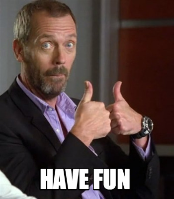
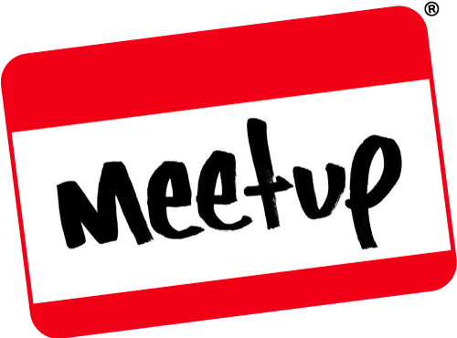
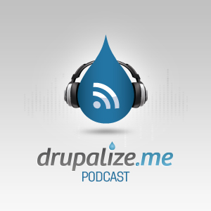

Bienvenidos a esta nuestra comunidad
Sobre nosotros
Sobre nosotros

Sobre nosotros
Sobre nosotros

Sobre nosotros
Sobre nosotros
y también:
- Alejo
- Saliam (Nacho)
- Pascual
- Patricio
- Ramón
- Sergio
- Francisco
- José
- ...
¡Y cada dia más!
Drupal Murcia
¿Qué hacemos aquí?
Un poco de historia
¿Qué es la comunidad Drupal?
¿Qué es la comunidad Drupal?
Drupal es más que código, es una gran comunidad
¿Cómo se consigue eso?
La comunidad Drupal en el mundo
La Drupal Association es la encargada de promover la comunidad en el mundo.
@DrupalAssocLa comunidad Drupal en el mundo: iniciativas
Community Cultivation Grants
Programa de ayuda que busca transformar, dar soporte y formación a comunidades Drupal en el mundo, particularmente en zonas emergentes.
Eventos
- DrupalCon North America - New Orleans - 9-13 May 2016
- DrupalCon Europe - Dublin - 26-30 September 2016
Global Training Days

Iniciativa para introducir a nuevos adeptos en el maravilloso mundo de Drupal.
Empresas y grupos locales se ofrecen para montar sesiones de formación, gratuitas o a precios asequibles.
La comunidad Drupal en España
La Asociación Española de Drupal es la encargada de promover la comunidad en España.
@drupalaedIniciativas
Para conseguir promover Drupal en España, la AED- Apoya a las comunidades locales
- Actúa como nexo de unión
- Financia y organiza sprints y otros eventos
- Gestiona la relación con empresas e instituciones
Eventos
- DrupalCamp: principal evento, fin de semana + business day + sprints
Barcelona (2010), Sevilla (2011), Madrid (2012), Cáceres (2013), Valencia (2014), Jerez (2015) y este año en Grananda (2016) - DrupalDay: evento de un día, para amenizar la espera entre Camp y Camp
Eventos
Grupos Locales
Grupos de personas frikis interesados en Drupal, afines a un área geográfica
Eventos e Iniciativas
- Organizar reuniones periódicas para hablar sobre Drupal y beber cerveza... ¿adivináis?
- Charlas, Sprints, DrupalDay
- Acudir juntos a eventos
Drupal & Beers
Grupos Locales
¿Cómo crear un grupo local?
Pasos previos
Comprobar que no exista ya uno!! groups.drupal.org/spain

Ingredientes
- Al menos 1 o 2 personas (cuantas más mejor).
- Ganas de aprender y compartir conocimientos/experiencia en torno a Drupal.
- Una pizca de iniciativa.
Crear el grupo
Notificar la creación del grupo a la AED.
Darle visibilidad: en drupal.org, IRC, Redes sociales, Meetup, eventos afines, ...
Publicitarlo, para buscar más drupaleros por la zona.
Ya tenemos grupo ¿Ahora qué?
Comunicación
Definir medios de contacto y de organización:
- IRC: para conectarse y chatear en todo momento.
- Hangout: para videollamadas, reuniones en grupo.
- Meetup: para planificación de quedadas.
- Listas de correo: para distribución de mensajes en el grupo.
- WhatsApp / Telegram: para contacto en el momento.
Organizar eventos/actividades
- Drupal & Beers
- Charlas o presentaciones temáticas
- Debates/mesas redondas
- Sprints
- ...
Relacionarse con otros grupos
Comunidades afines: Betabeers, Php, Symphony, desarrollo web ...
Cómo contribuir con la comunidad
Diferentes maneras:
- Intégrate en la comunidad: empezando por tu grupo local!!
- Hazte socio de la AED.
- Contribuye/revisa código.
- Da soporte a otros.
- Asiste a eventos.
- Ayuda a organizar eventos: DrupalCamp, DrupalDay.
- Dando publicidad.
Qué hacer para mantener un grupo local
Mantener viva la llama
Dificultades y cómo solventarlas
Es importante que haya constancia a la hora de realizar quedadas o eventos y mantener la actividad del grupo. Las quedadas pueden ser más formales o menos.
- Es dificil coincidir todos en las mismas fechas, horas e incluso el mismo sitio.
- Planificar conjuntamente y con antelación un calendario de fechas para las actividades.
- Intentar respetar las fechas propuestas.
Dificultades y cómo solventarlas
- Localizar un buen lugar para quedar.
- Tener varios sitios posibles diferentes.
- Si se organizan presentaciones, será necesario disponer de proyector.
- Poder tomar algo, preferiblemente tras la quedada.
- Tratar temas de interés para todos.
- Decidir entre todos los componentes que temas son más interesantes.
- Tratar de aprender todos de todos.
Y sobre todo ...
¡Hay que disfrutar y divertirse Drupaleando!
Cómo montar un DrupalDay desde 0
Echarle huevos, pijo
Antes de nada... deberías tener en cuenta que necesitas:
- Ganas
- Tener un equipo detrás (a no ser que seas del país vasco como keopx :D)
- Una idea de sitio(s) para el evento
Presentar candidatura
- Contactar con el grupo de trabajo de eventos de la AED
- Comentar tus ideas y preguntar todas las dudas que tengas
- La AED te indicará los próximos pasos a seguir para presentar la candidatura
- En caso de que haya varias candidaturas la asociación analizará cada una de ellas y comunicarán la sede definitiva
¡Enhorabuena, vais a organizar un DrupalDay!
Herramientas útiles de comunicación y organización
- Un gestor de tareas sencillo: Trello, Kanbanflow, etc.
- Hangout o Skype para mantener reuniones frecuentes
- Grupo de WhatsApp o Telegram para notificaciones importantes (próxima reunión, asuntos bloqueantes, logros importantes)
- Chat IRC para comunicarte con la AED, la comunidad española o tu grupo organizador local
Sede
Sede
- Universidades, salas de conferencias/congresos, etc.
- 1 o 2 sálas dependiendo de la previsión de asistentes y el número de sesiones
- Wifi, eterno enemigo en este tipo de eventos
- Proyectores o tener familiares cerca que tengan
- Accesibilidad, buena comunicación de transporte público y aparcamiento
- Zonas para comer cercanas
Sesiones
Sesiones
- Define las temáticas más importantes para tu evento
- Call for papers y/o modo recruiter
- Tipos de sesiones: charlas, talleres, mesa redonda, BOF, sprints, etc.
Web
En nuestro caso utilizamos como base el proyecto DrupalDay para agilizar el proceso. Gracias a keopx, ckrina, karmen, David Hernandez y drupal-murcia por colaborar en él.
Necesitamos:
- Un logo
- Caracterizar la web con los colores de tu ciudad/región
- Fotos de la ciudad, lugar del evento, gastronomía local
- Introducir noticias y novedades
- Diferentes secciones
Sitios de fiesta
Busca sitios céntricos donde quepan tus drupaleros y si es posible conseguir precios por grupo :P

Comidas y cenas
- Necesitarás sitios cercanos para comer el día de las sesiones
- Las cenas recomendable que sean en lugares céntricos cerca de las zonas de fiesta
Alojamiento
Recopila hoteles/hostales/albergues cercanos a la sede del evento y a las zonas de fiesta.
Transporte
- Busca las mejores combinaciones para llegar a tu ciudad: avión, coche, tren, autobus, etc
- Consulta la posibilidad de conseguir descuentos de congreso
- Información y datos de contacto de taxis, metro, tranvía, autobus para llegar a la sede del evento y a las zonas de fiesta
Darle publicidad al evento (spammear al máximo)
- Redes Sociales: Usar la cuenta de @drupalday y la cuenta del grupo local
- Universidades: Contacta con las universidades y centros de formación profesional de tu ciudad
- Aprovecha la existencia de otros grupos locales relacionados: betabeers, grupo usuarios linux, software craftsmanship, etc.
- La Asociación Española de Drupal también te ayudará en esto :)
Diseño
Disfrutar del evento
Los DrupalDay son únicos
Estamos en contacto :P
Dónde informarme
- groups.drupal.org
- Newsletter drupal.org
- Twitter: @drupal, @drupalAED,...
|  Meetup | |
|  Drupalize.me | |
| Drupical |
Preguntas
¡¡Gracias!!